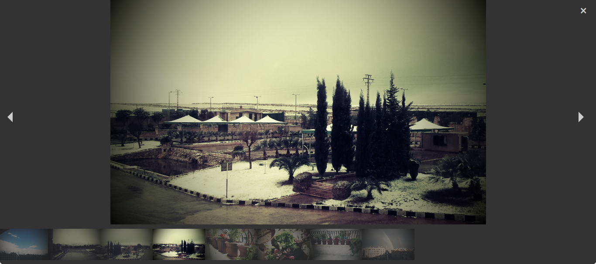
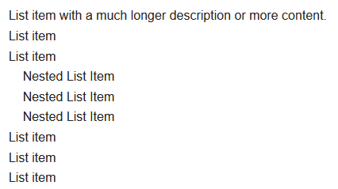
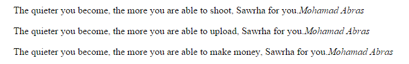
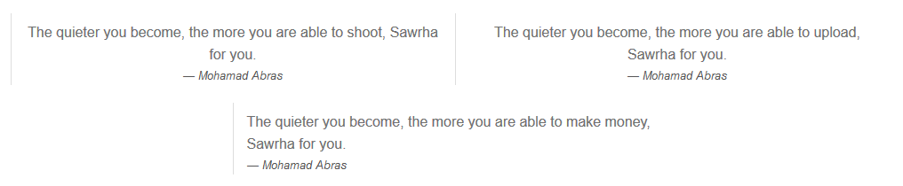
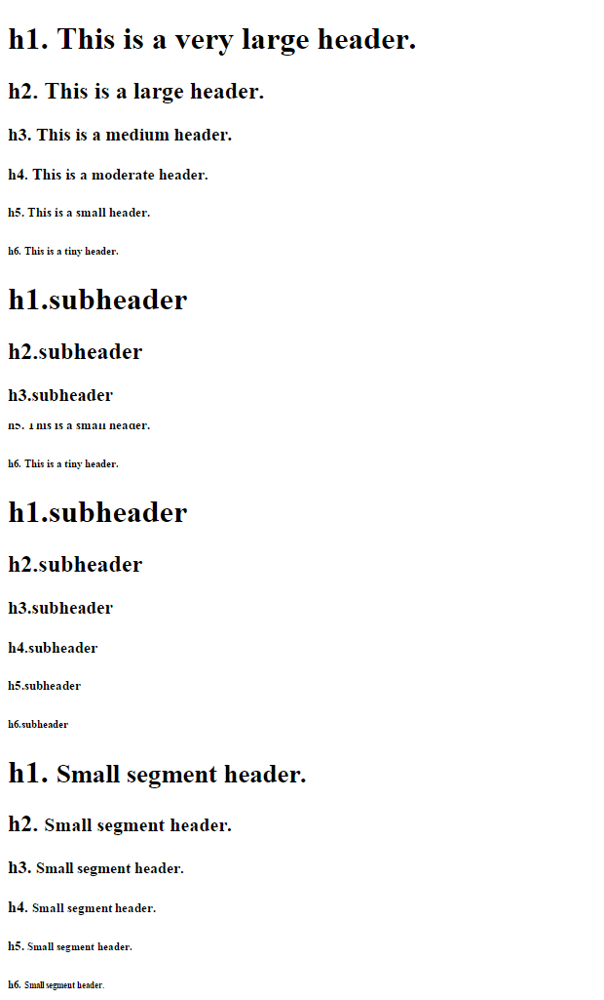
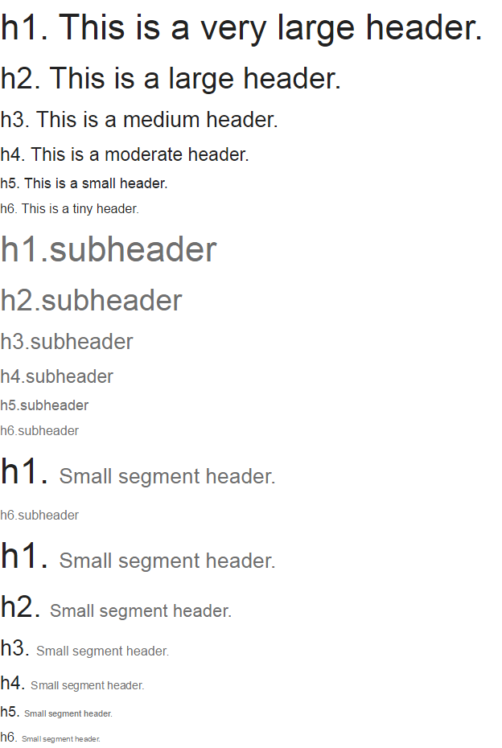
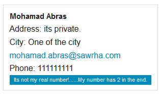
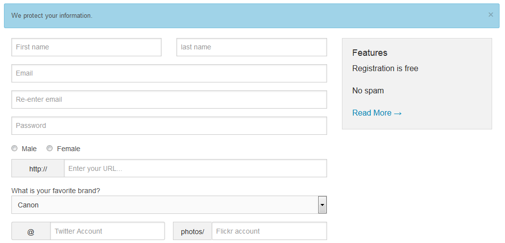

الجزء الخامس والسادس هما أفضل أجزاء السلسلة بالنسبة لي، وفيهما سوف نتعرف على مواضيع حساسة جدًا في استخدامنا لإطار العمل Foundation، سنتعرف على آلية التعامل مع الصور والفيديو وسوف نتحدث عن أساليب عرض النصوص والعناوين التي يُقدمها Foundation وغيره من المواضيع.
"المدار" وهو ما يقابل "carousel" في إطار العمل Bootstrap، قدم Foundation "المدار" بشكل مُبسطٍ وسريع الإعداد كل ما عليك فعله هو إضافة خاصية المعلومات data-orbit "للقائمة الغير مرتبة" (<ul>) وستتكفّل JavaScript بما بقي لإنشاء "المدار"، ومُحتوى "المدار" يُمكن أنّ يكون نصّيًا أو صورًا والتي يُمكن أن يُضاف لها "شرح صورة" (caption)، ويدعم "المدار" ميزة المسح بالإصبع (swiping) في الأجهزة التي تُوفر شاشات لمسية، وخاصية الربط العميق (deep linking)، والتي تُتيح لك إنشاء رابط لأحد عناصر "المدار".
في صفحة المعرض قمنا باختيار ثلاث صور لعرضها باستخدام "المدار"، لاحظ أنّ الشيفرة بسيطة جدًا ولا تحتاج إلى الكثير من الإعداد.
<div class="row">
<ul data-orbit>
<li>
<img src="img/1.jpg">
</li>
<li>
<img src="img/2.jpg">
</li>
<li>
<img src="img/3.jpg">
</li>
</ul>
</div>
في الصفحة الرئيسة الخاصة بالمتجر قمنا بإنشاء "المدار" باستخدام مُحتوى نصّي فقط.
<div class="row panel">
<ul class="text-center" data-orbit>
<li>
<div>
<h2>Start make money by selling you photos</h2>
<p>We have connection with big clients looking for you photos</p>
</div>
</li>
<li>
<div>
<h2>We are fair</h2>
<p>We take 95% and the rest is for you</p>
</div>
</li>
<li>
<div>
<h2>We have subscription plans</h2>
<p>Three bussnies plans for all sizes</p>
</div>
</li>
</ul>
</div>

مثال حي http://codepen.io/anon/pen/NPpRqQ:
للأسف توقف Foundation عن دعم "المدار" بعد أكثر من أربعة أعوام على إصداره، تنصح Zurb باستخدام أحد الحلول البديلة وهي إضافة slick. الأمر الجيد أنّه مازال بالإمكان متابعة استخدام "المدار" وبكامل ميزاته، ولكن بدون تحديثات مستقبلية.
قام Foundation بتوفير إضافة عرض الصور (lightbox)، حيثُ أنّ "المدار" لا يستطيع التعامل مع الصور ذات الارتفاع المختلف، ولإنشاء عارض الصور كل ماعليك فعله هو تجميع الصور في "قائمة غير مرتبة" وإضافة الصنف clearing-thumbs والخاصية data-clearing، لتحصل على معرض صور بأبسط الخيارات، حيث تُعرض جميع الصور على الصفحة وعند الضغط على أحدها يتم الانتقال إلى صفحة جديدة لتُعرض الصورة بحجم كبير مع إمكانية التّنقل بين الصور الأُخرى بشكل مُصغّرات (thumbnails)، ولإضافة شيء من الجمالية للصور بإمكانك استخدام الصنف th للوسم <img>، الذي يضيف إطارًا و"تأثير مرور" (hover) للصور، كما يُقدم Foundation أسلوبًا آخرًا للعرض حيثُ بإمكانك اختيار إحدى الصور وعرضها في الصفحة بشكل منفرد وبعد الضغط عليها يُنتقل إلى صفحة أُخرى تعرض الصورة المُختارة بحجمها الكبير وباقي الصور بشكل مُصغّر، ولتطبيق هذا الأسلوب عليك إضافة الصنف clearing-feature "للقائمة غير المرتبة" والصنف clearing-featured-img للصورة المُختارة، ولإضافة "شرح صورة" (caption) نستخدم "خاصية المعلومات" data-caption.
<div class="row">
<div class="large-12 columns">
<ul class="small-block-grid-2 medium-block-grid-3 large-block-grid-4 clearing-thumbs" data-clearing>
<li><a href="img/th1.jpg" class="th"><img src="img/th1.jpg"></a></li>
<li><a href="img/th2.jpg" class="th"><img src="img/th2.jpg"></a></li>
<li><a href="img/th3.jpg" class="th"><img src="img/th3.jpg"></a></li>
<li><a href="img/th4.jpg" class="th"><img src="img/th4.jpg"></a></li>
<li><a href="img/th5.jpg" class="th"><img src="img/th5.jpg"></a></li>
<li><a href="img/th6.jpg" class="th"><img src="img/th6.jpg"></a></li>
<li><a href="img/th7.jpg" class="th"><img src="img/th7.jpg"></a></li>
<li><a href="img/th8.jpg" class="th"><img src="img/th8.jpg"></a></li>
</ul>
</div>
</div>

التعامل مع تجاوبية الفيديو من الأمور المزعجة في CSS، وهي في نفس الوقت مطلبٌ أساسيٌ في أي موقع. يُقدم Foundation الصنف flex-video للتعامل مع الفيديو المُضمّن (embedded) في الصفحة، حيث يقوم هذا الصنف بالحفاظ على أبعاد الفيديو مُتناسقة على مُختلف قياسات الشاشات. للاستفادة من "الفيديو المرن" Flex Video كل ما عليك فعله هو إحاطة الوسم <iframe> بالوسم <div> مع الصنف flex-video، لتحصل على تجاوبية على أي حجم شاشة، ويُمكن استخدام الصنف widescreen لتوسيع عرض الفيديو. كما يُقدم Foundation صنفًا خاصًا لموقع Vimeo وبنفس الاسم وذلك لتنسيقه بشكل أفضل في الصفحة.
<div class="flex-video">
<iframe width="560" height="315" src="//www.youtube.com/embed/ExAmPl3" frameborder="0" allowfullscreen></iframe>
</div>
دائمًا لدمج فيديو في الصفحة يجب استخدام الرابط المسمى Embed المُلحق بالفيديو، في YouTube يُمكن الحصول على الرابط أسفل الفيديو.

يَهتم Foundation بمظهر العناوين والنصوص (typography)، حيث يُقدم Foundation "للقائمة غير مرتبة" <ul> الأصناف "قرص" disc لجعل جميع عناصر القائمة مسبوقًا بدائرة مُطمسة وحتى المتداخل منها (nested)، ,الصنف "دائري" circle يَسبق جميع العناصر بدائرة مُفرغة، والصنف "مربع" square يسبق العناصر بمُربع صغير مُطمس، ويعرض الصنف no-bullet القوائم مُجردة من أيّ شكل.
<ul class="no-bullet"> <!-- القائمة سوف تظهر من دون أيّ شكل -->
<li>List item with a much longer description or more content.</li>
<li>List item</li>
<li>List item
<ul>
<li>Nested List Item</li>
<li>Nested List Item</li>
<li>Nested List Item</li>
</ul>
</li>
<li>List item</li>
<li>List item</li>
<li>List item</li>
</ul>

لاحظ الفرق في الاقباسات الموجودة في الصفحة الرئيسة في المتجر قبل وبعد استخدامنا لـFoundation.


لاحظ التنسيق الخاص بالعناوين (headings) في مُتصفح Chrome والتنسيق الخاص بـFoundation.


يُقدم Foundation الصنف vcard "لقائمة غير مرتبة" <ul> لعرض العناصر <li> على شكل بطاقة عمل، حيث يُحيط العناصر بحدود (border) لتبدو كالصندوق لتُستخدم كبطاقة عرض لبيانات الاتصال.
<ul class="vcard">
<li class="fn">Mohamad Abras</li>
<li class="street-address">Address: its private.</li>
<li class="locality">City: One of the city</li>
<li class="email"><a href="#">mohamad.abras@sawrha.com</a></li>
<li>Phone: 111111111</li>
</ul>

يُقدم Foundation الصنفين show-for-print لإظهار المُحتوى في صفحة الطباعة، والصنف hide-for-print لإخفاء المُحتوى في صفحة الطباعة.
يُقدم Foundation الصنف "علامة" label لتنسيق المُحتوى النصي ليكون ظاهرًا للعيان للإشارة إلى أهمية المُحتوى.
<li class="label">Its not my real number!......My number has 2 in the end.</li>

يُقدم Foundatin تنسيقًا خاصًا للوسم <kbd> لجعله بارزًا وأكثر وضوحًا في النص.
لابُدْ أنّك لاحظت أيضًا الصنف panel الذي قمنا باستخدامه في المتجر أكثر من مرّة والذي يُضيف حدود واضحة مع خلفية تحمل لونًا بالقيمة f2f2f2 للمُحتوى الداخلي، ويُمكن تخصيص الصنف panel بالصنف callout ليُضيف لونًا يحمل القيمة ecfaff، والصنف radius لجعل الحواف مصقولة.
في صفحة الخطط والأسعار الخاصة بالمتجر سوف نستخدم الصنف panel مع الصنف callout والصنف radius.
<h1 class="panel callout radius">Plans and Pricing</h1>

وهي من الإضافات المُساعدة التي بإمكانك أن تستخدمها مع النماذج، أو كوسيلة عرض للإشارة إلى نجاح أو فشل عملية ما على الموقع، أو حتى لعرض معلومات مُساعدة للمستخدم. تأخذ الصناديق عرض الحاوية الخاصة بها بشكل كامل، ولإنشاء صندوق كل ما تحتاجه هو خاصية المعلومات data-alert والصنف alert-box.
ولتخصيص الصناديق بإمكانك استخدام الأصناف "نجاح" success، "حواف مصقولة" radius، "تحذير" warning، "حواف دائرية" round، "تحذير" alert، و"معلومة" info.
في صفحة التسجيل الخاصة بالمتجر سوف نقوم بإنشاء صندوق تنبيه للإشارة إلى أننا نقوم بحماية معلومات المُستخدم، سوف نستخدم الصنفين radius لجعل الحواف مصقولة وinfo من أجل اللون.
<div data-alert class="alert-box info radius">
We protect your information.
<a href="#" class="close">×</a>
</div>

"المعلومة الجانبية" (tooltip) هي طريقة سريعة لعرض معلومات لمصطلح مُعين أو حدث (action) عند وقوف المؤشر على كلمة ما على الصفحة. للتطبيق كل ماعليك فعله هو إحاطة المصطلح المُراد إضافة "معلومة جانبية" له بالوسم <span> مع الصنف has-tip، الذي يجعل من المصطلح عريضًا (bold)، بالإضافة إلى خاصية المعلومات data-tooltip، والرسالة المُراد عرضها سوف نضعها في الخاصية title.
في متجرنا سوف نستفيد من هذه الخاصية في صفحة التسجيل وفي عمود المزايا تحديدًا للإشارة إلى أنّ الرسائل الخاصة بالمتجر هي رسائل تنبيه فقط.
<p><span data-tooltip class="has-tip" title="Just important notifications">No spam</span></p>

وهو نوع من أنواع النوافذ المُنبثقة، حيث النافذة تظهر لعرض مُحتوى معين مع تعتيم للخلفية في الصفحة الحالية، يَستخدم Foundation مكتبة jQuery لتوفير إضافة الحوار المنبثق، ولإنشائها نقوم بإنشاء "قسم" <div> وإضافة تعريف id باسم مناسب، والصنف reveal-modal، وخاصية المعلومات data-reveal. داخل القسم بإمكانك وضع ما تريد من مُحتوى سواءً أكان كتابيًا أو صورًا أو فيديو أو نماذج، وحتى إنّه بالإمكان ربط حوار منبثق بآخر، وللتحكم بحجم الحوار بإمكانك استخدام خمسة أصناف، وهي بالتدريج من صغير جدًا tiny إلى كبير جدًا xlarge، بالإضافة إلى الصنف ملء الشاشة full، وبعد إنشاء modal بإمكانك استدعائه عبر خاصية المعلومات data-reveal-id.
في الصفحة الرئيسة بالمتجر سوف نقوم بإنشاء حوار منبثق للصور الأكثر مبيعًا، حيث عند الضغط على أحد الصور سوف يتم ظهور نافذة تعرض الصورة بنافذة مُستقلة مع إمكانية إغلاقها سواءً بالضغط على إشارة الإغلاق أو بالضغط على أي مكان في الصفحة.
<!-- Any where in the HTML document -->
<a href="#" data-reveal-id="myModal"><img class="th" src="img/th2.jpg"></a>
<!-- At the bottom of HTML document -->
<div id="myModal" class="reveal-modal small" data-reveal>
<img src="img/th2.jpg">
<a class="close-reveal-modal">×</a>
</div>

إلى هنا نكون قد وصلنا إلى نهاية الجزء الخامس من السلسلة، والذي من خلاله تحدثنا فيه عن أمور عدّة، وبعد هذا الجزء من المُفترض أن تكون قد ألفت التعامل مع الإطار وتوضحت الفلسفة التي يسير عليها، وفي الجزء السادس والأخير سوف نتحدث عن أمور مُكملة للإطار وهي في نفس الوقت تُميز الإطار عن غيره من أُطر العمل.